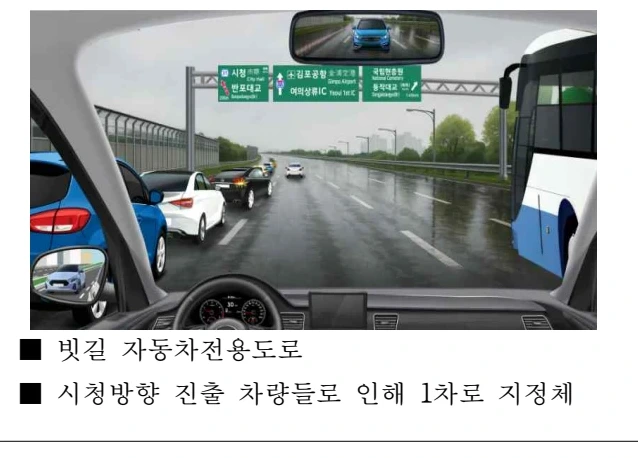

824. Trong tình huống sau, hai cách lái xe an toàn nhất là gì?

- ①Chuyển làn nhanh sang làn đường thứ 3 để tránh xe đang đổi làn.
- ②Tăng tốc để ngăn xe ở làn đường thứ 1 nhập làn.
- ③Sử dụng còi và đèn pha để cản trở xe đổi làn.
- ④Giảm tốc để nhường đường cho xe đang đổi làn.
- ⑤Trên đường trơn ướt, khoảng cách phanh dài hơn bình thường nên giảm tốc từ sớm.
Xem đáp án
Đáp án
④ Giảm tốc để nhường đường cho xe đang đổi làn.
⑤ Trên đường trơn ướt, khoảng cách phanh dài hơn bình thường nên giảm tốc từ sớm.
Căn cứ
Khi ùn tắc, các xe có thể thường xuyên chuyển làn để tránh hàng xe, vì vậy bạn phải luôn lái xe trong khi nhìn về phía trước vì việc thay đổi tuyến đường có thể xảy ra thường xuyên. Ngoài ra, trên đường mưa, quãng đường phanh dài hơn bình thường nên cần có khoảng cách an toàn và giảm tốc vừa đủ.
Phần căn cứ là bản dịch máy để tham khảo.